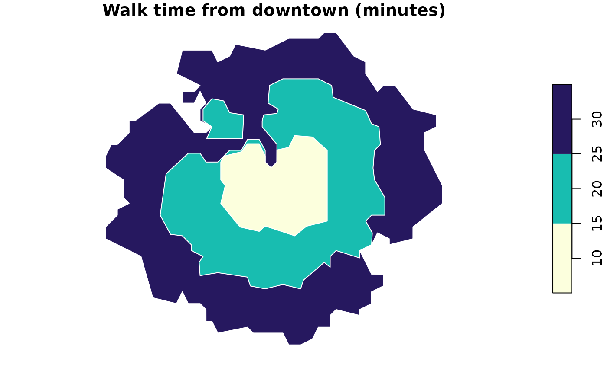
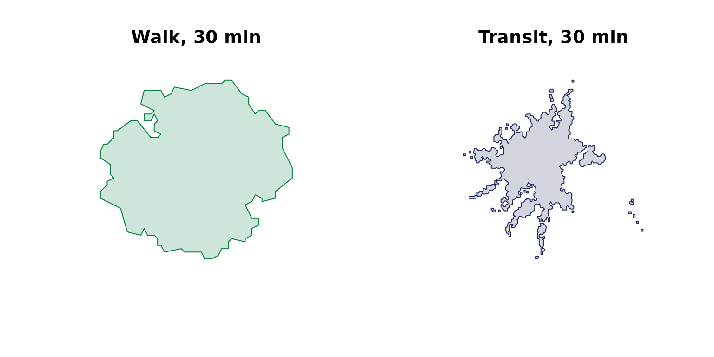

The quickest way to feel what Close gives you: read one block’s travel times, map the groceries around it, then draw how far you can walk from it. The example city is Providence, Rhode Island.
Running this tutorial uses about 90 tokens.
Set up
Build a client, then read what you need from the free catalog.
library(closecity)
library(sf)
close <- close_client("ck_live_your_key") # use your own key here
types <- close$destination_types()
grocery <- types$dest_type_id[types$label == "grocery_stores"]
downtown <- close$places("Providence")[1, ]Read one block’s travel times
Pick a block and ask how long it takes to walk to each kind of amenity. The result is a small data frame, one row per category.
summary <- close$block_summary("440070008001068", mode = "walk")
summary[, c("dest_type_id", "travel_time")]
#> dest_type_id travel_time
#> 1 1 10
#> 2 5 26
#> 3 6 22
#> 4 7 10
#> 5 27 3
#> 6 28 3
#> 7 29 9
#> 8 30 6
#> 9 31 3
#> 10 32 15
#> 11 33 18
#> 12 34 9
#> 13 35 13
#> 14 38 17
#> 15 40 8
#> 16 41 9
#> 17 43 3
#> 18 60 2
#> 19 63 3
#> 20 64 4
#> 21 65 7
#> 22 66 13
#> 23 67 3
#> 24 126 10
#> 25 159 14
#> 26 160 24
#> 27 200 2
#> 28 204 2
#> 29 205 2
#> 30 206 4
#> 31 207 7
#> 32 208 3
#> 33 209 9Map the groceries nearby
A radius search returns points, ready to map.
groceries <- close$pois_search(lat = downtown$lat, lon = downtown$lon,
radius_m = 1200, type = grocery)
plot(st_geometry(groceries), pch = 19, col = "#058040")Draw how far you can walk
An isochrone is the headline map: the area you can reach on foot in 10, 20, and 30 minutes. The contours come back largest first, so drawing them paints the nearer times on top.
rings <- close$isochrone(block = "440070008001068", mode = "walk",
direction = "from", contours = c(10, 20, 30))
plot(rings["contour"], pal = hcl.colors(3, "YlGnBu", rev = TRUE),
border = "white", main = "Walk time from downtown (minutes)")
Walk versus transit
The same block, the same 30-minute budget, two modes side by side. It is the clearest way to see what the bus buys you.
walk <- close$isochrone(block = "440070008001068", mode = "walk",
direction = "from", minutes = 30)
transit <- close$isochrone(block = "440070008001068", mode = "transit",
direction = "from", minutes = 30)
par(mfrow = c(1, 2))
plot(st_geometry(walk), col = "#05804033", border = "#058040",
main = "Walk, 30 min")
plot(st_geometry(transit), col = "#202a5b33", border = "#202a5b",
main = "Transit, 30 min")